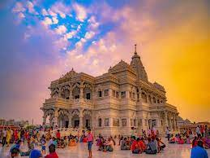
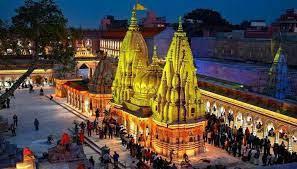
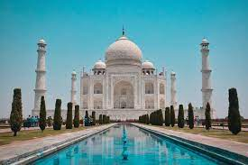
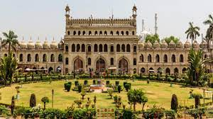
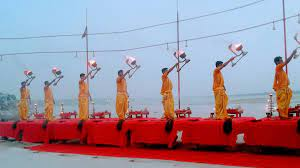
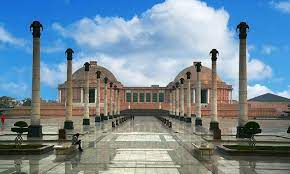

Prem Mandir Vrindavan
The Prem Mandir is a massive temple that was shaped by Jagadguru Shri Kripaluji Maharaj in the year 2001. Known as "Temple of God's love", this grand religious place is dedicated to Radha Krishna as well as Sita Ram. Located in Vrindavan, the holy city in the district of Mathura in Uttar Pradesh, the temple is enveloped with piousness and serenity. This newly constructed temple is the most beautiful in the entire Brij area and is crowded with devotees during the time of the Aarti.
Made out of white marble and adorned with very intricate carvings, this temple is also famous for its architectural beauty. Statues of Shri Krishna and his admirers, portraying essential occasions surrounding the Lord's life, cover the main temple. Various scenes from Krishna's life, like raising the Govardhan Mountain, have been depicted on the periphery of the Prem Mandir. The lighting of the temple further glorifies its spectacular look, especially during the night. The colored water twists and twirls to the tunes of the kirtans of Radha Krishna being played nearby and are an audio-visual delight.

Kashi Vishvanath Temple
Kashi Vishvanath Temple is one of the most famous Hindu temples dedicated to Lord Shiva. It is located in Varanasi, Uttar Pradesh, India. The temple stands on the western bank of the holy river Ganga, and is one of the twelve Jyotirlingas, the holiest of Shivatemples. The main deity is known by the name Vishvanatha or Vishveshvara meaning Ruler of The Universe. Varanasi city is also called Kashi, and hence the temple is popularly called Kashi Vishvanath Temple.

Taj Mahal
One of the seven wonders of the world, Taj Mahal is located on the banks of River Yamuna in Agra. It was built by the Mughal Emperor Shah Jahan as a memorial for his third wife, Mumtaz Mahal. It also houses the tomb of Shah Jahan himself. Constructed entirely out of white marble in the 17th century, Taj Mahal is one of the most beautiful monuments in the world. Every year visitors numbering more than the entire population of Agra pass through the magnificent gates to catch a glimpse of this breathtaking monument!

Bara Imambara
The Bara Imambara of Lucknow is one of the most famous monuments of the city. Also known as Asfi Imambara, after the name of the Nawab of Lucknow who got it constructed, it is an important place of worship for the Muslims who come here every year to celebrate the religious festival of Muharram. The Imambara is primarily known for its incredible maze, known as Bhul Bhulaiya locally, which is located on the upper floor of the monument. The Bara Imambara has a unique style of construction. The central hall of Bara Imambara, which is said to be the largest arched hall in the world, measures 50 meters long and goes up to a height of 15 meters.

Assi Ghat
According to the ancient history, it is said that the Goddess Durga (consort of the Lord Shiva) had thrown her sword in the river (called Assi River) after killing the demon Shumbha-Nishumbha. That’s why the place has been named as Assi Ghat as it is located at the union of the River Ganga and Assi River. Subah Banaras morning Aarti is performed every day at the Assi Ghat from 5AM to 6AM. On Sunday morning the event is followed by a free session of Yoga that anyone can attend. The evening Ganga Aarti is performed at 6:30PM at both ends of the Ghat. The event is later followed by Deep Daan (the act of offering earthen lamps and flowers to the Ganga river). In contrast to the morning Aarti, Evening Aarti is attended by a large number of locals and travellers.

Red Fort
Red Fort is the utmost sign of Mughal Power. The emperor Shah Jahan built the Red Fort to their honor. The Red Fort had been coated with magnificent jewels but the Britishers looted them during their control over India. Red Fort was made after 9 years and a few months of hard work, which is unbelievable. it included days and night shifts. The Red Fort is known for its large sandstone walls enclosing the structure. Our Prime Minister hosts the flag at the Red Fort every Independence Day. The Red Fort covers a very large area of ground. The Red Fort is called a red fort probably because it's red. The Red Fort is located in Old Delhi, India. We call Red Fort in hindi as Lal Qila. The red fort is fenced from all around with a large mass of green grasses. Every day, thousands of visitors visit this place.

Ambedkar Memorial Park
Ambedkar Memorial Park is located on Vipul block of Gomti Nagar, it is a public park and honors the life and memories of Jyotirao Phule, Narayan Guru, Birsa Munda, Shahuji Maharaj, Bhimrao Ambedkar, Kanshi Ram and all of them. It was constructed in the year 2008 by Mayawati, former Chief Minister of Uttar Pradesh. Sitting on a chair in the park, Dr. BR. There is a huge bronze structure of Ambedkar whose height is 125 feet. The Ambedkar Memorial Park was constructed to commemorate the people who dedicated their life to equality and human justice like Dr. Bhimrao Ambedkar, Kanshi Ram and others.